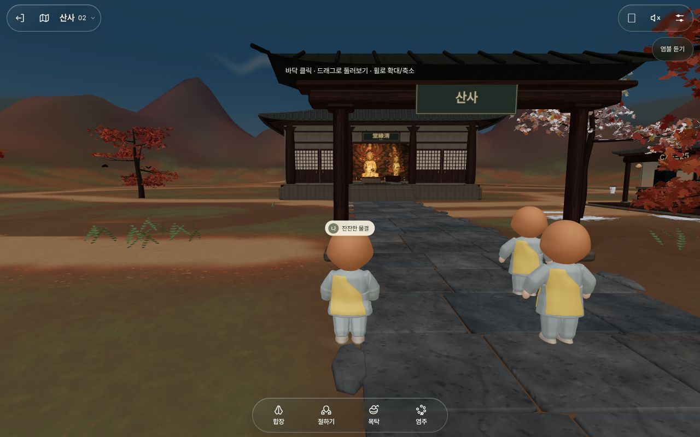
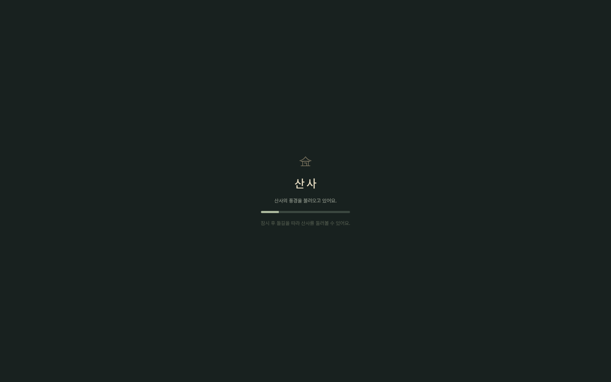
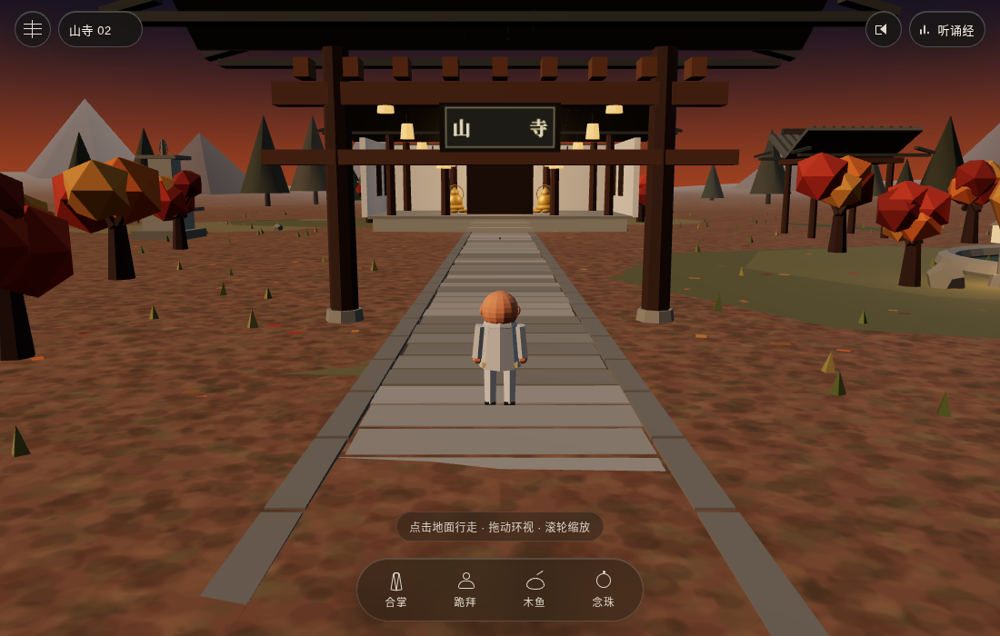
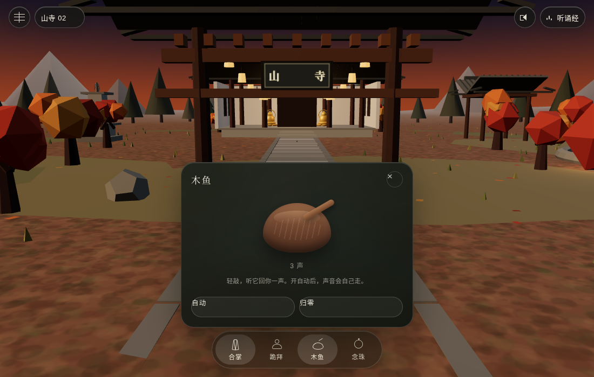
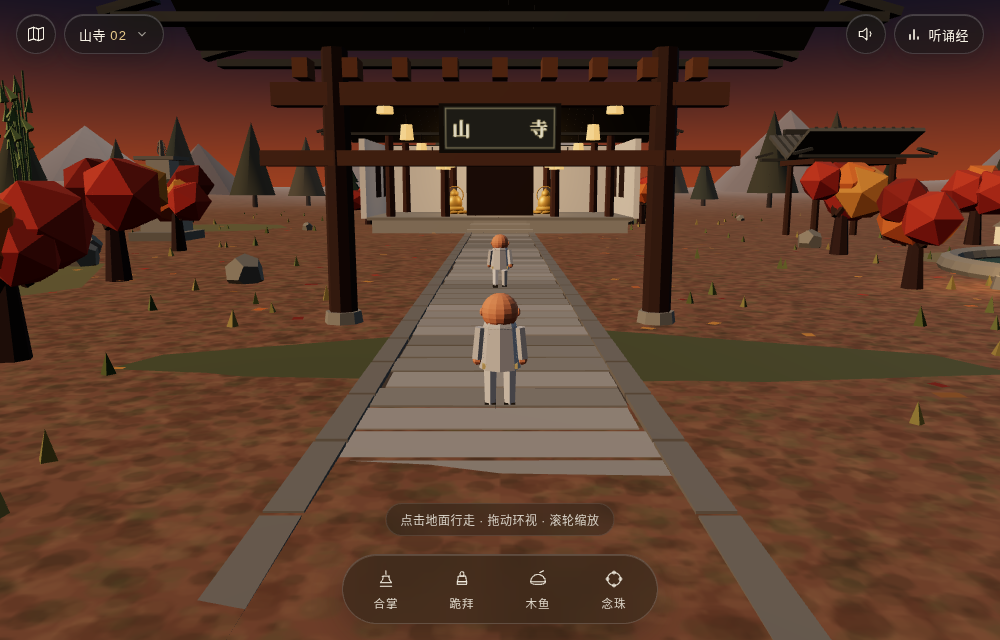

这不是一个"寺庙介绍页"，而是一个用 Three.js 搭建的低多边形（low-poly）第三人称多人小世界：你以一个合掌小和尚的身份走进山门，可以合掌、跪拜、敲木鱼、拨念珠、上香、点灯写愿、绕塔、搬瓦修殿，也可以走进 CAFE25 给陌生人递一杯咖啡。整套体验没有一句 KPI 文案，全部通过动作与场景叙事完成。

「말없이 같이 앉아 있는 온라인 절」——不言不语、一起坐着的线上寺庙。核心不是祈福许愿，而是陪伴式静坐。
PWA 单页 3D 场景，横竖屏自适应，手机优先（安全区、触摸手势、单指拖动环视）。
极克制：供养米（Toss 账户 + KakaoPay 二维码）、Buy Me a Coffee、以及 GS25 联名 CAFE25 的品牌场。
低模 + 秋色 + 暮光 + 连续环境音（风、鸟、木鱼、梵钟、心经）。没有任何倒计时与签到。
| 层 | 实测结果 | 判断依据 |
|---|---|---|
| 前端框架 | Vite 构建的 SPA，无 React/Vue 运行时痕迹 | 入口 assets/index-*.js 仅 2.9 KB，动态 import() 主包；DOM 由原生 JS 拼装 |
| 3D 引擎 | Three.js（WebGL2） | 控制台报错栈 THREE.WebGLRenderer；GLB 模型 + PBR 材质三件套 |
| 实时多人 | Cloudflare Workers + WebSocket | wss://sansatemple.com/presence?roomLimit=20&garden=2，单房间上限 20 人，多房号（02…） |
| 资产 | GLB 模型 7 个 + 材质贴图 8 组（color/normal/roughness）+ 音轨 2 条 | buddha.glb、avalokitesvara.glb、mahastamaprapta.glb、monk.glb、gongyang-cat.glb、pine.glb、heart-sutra-v1.mp3 |
| 字体 | 自研可变字体 Sansa Quiet UI（45–930 字重，按 unicode-range 切片） | /fonts/SansaQuietUI-Core.woff2 + Remainder.woff2 |
| 可观测 | Cloudflare Insights + GA4 | static.cloudflareinsights.com/beacon.min.js |
| PWA | manifest + standalone 显示 + 主题色 #24251f | manifest.webmanifest，含 192/512 图标 |
整张地图不是关卡，而是一条从"入"到"静"再到"施"的动线：从山门进入 → 沿参道穿过枫林 → 到法堂礼佛 → 转到后山搬瓦做务 → 再到江边与竹林散步 → 最后在 CAFE25 递出一杯咖啡。
| 点位 | 韩文 | 内容与可交互物 |
|---|---|---|
| 入口 | 입구 | 山门牌匾、青石参道、第一人称入场所见画面 |
| 法堂 | 청연당 (淸緣堂) | 三尊像（释迦 / 观音 / 大势至）、香炉（排队上香）、福田箱、合掌与跪拜（25 拜） |
| 莲池 | 연못 쉼터 | 莲花池、长椅（两人座）、点灯挂环（许愿 40 字） |
| 钟楼 | 범종 | 梵钟 + 撞木，可敲响，声场扩散 |
| 石塔 | 탑돌이 | 三层石塔，绕塔经行（自动沿轨道行走） |
| 竹林 | 대나무 숲 | 竹林小径、风声通道 |
| 江边 | 강변 산책로 | 东侧河流、水草、水波，散步道 |
| 柿饼架 | 곶감 덕장 | 晒柿饼的木架，秋收意象 |
| 工地 | 공사 현장 | 搬瓦修殿：戴安全帽 → 取瓦 → 放到工地 → 汇入全服进度 |
| 咖啡 | CAFE25 | 手冲咖啡机、三种归属（无所有 / 全所有 / 赠送他人）、25 拜解锁、杯子丢弃与回收 |
| 动作 | 触发 | 机制 | 反馈 |
|---|---|---|---|
| 合掌 | 底部 dock「합장」 | 角色进入合掌姿态，3 秒呼吸循环 | 身体微倾 + 呼吸音 + 环境降噪 |
| 跪拜 | 底部 dock「절하기」 | 累计拜数，进度条 bow-progress；拜满 25 次解锁"全所有"咖啡 | 起身—跪下—叩首三段动画，木地板声 |
| 木鱼 | dock「목탁」 | 独立面板：手动敲 / 自动播放（BPM 稳定），可调音量 | 每次敲击：音效 + 计数 + 涟漪光圈 |
| 念珠 | dock「염주」 | 108 颗大珠，上下滑动/滚轮转动，记「第 N 圈 · 本轮 X 颗 · 共 Y 颗」 | 珠子高光流转、圈数提示、108 圈完成语 |
| 点灯 | 莲池灯架 | 选色（真红/栀子/青绿/米色/蓝）→ 写 40 字愿望 → 挂到空钩 | 灯笼亮起并漂浮，可回读他人的愿望 |
| 上香 | 法堂香炉 | 排队制（前方 N 人），轮到后走近、插香 | "고요한 마음을 한 자루에 담아"，青烟粒子 |
| 搬瓦 | 工地 | 戴安全帽 → 取一片瓦 → 走到工地放下；跨房间汇总进度 | 全服进度条 + "已为 3 号服务器搬运 N 片" |
| 咖啡 | CAFE25 机器 | 选豆/杯型 → 25 拜进度 → 出杯 → 可自饮、可递给附近玩家、可丢弃 | 手冲动画 + 杯体贴图 + 分享图（可保存 PNG） |
| 绕塔 | 石塔 | 一键沿预设路径环绕，可随时停 | 脚步节奏 + 视线随塔身抬升 |
| 地图 | 左上地图按钮 | 2D 手绘俯瞰图 + 10 个 POI 图钉，点击传送 | 淡入淡出 + 相机推轨 |
界面永远让位于场景：UI 用半透明玻璃（#ffffff12 起）与米纸色文字，只在夜景切到 is-night 深墨绿。金色只出现在佛身、灯火、进度三点。
单一可变字体，字重 300–500 为主；标题字距 +0.2em~0.3em（韩文排版的呼吸感）；正文 13px / 行高 1.75，绝不加粗堆叠。
胶囊（radius 999px）+ 圆形工具键（44px 触控下限）；对话框 20–24px 圆角，玻璃模糊 backdrop-filter。
统一缓动 cubic-bezier(.22,1,.36,1)；入场 600–900ms，对话 dialog-in 上浮 8px；全部尊重 prefers-reduced-motion。

fog），黄昏色温偏暖，远景山体用低饱和剪影叠层做空气透视。| 模块 | 职责 | 关键实现 |
|---|---|---|
pages/temple/index.vue | 页面壳、全屏 canvas、UI 层（Vue 模板） | uni-app 页面，navigationStyle: custom，pageOrientation: landscape 可切 |
scene/world.js | 程序化生成山门、法堂、石塔、钟、树、池、地形 | 不依赖原站 GLB，用 BoxGeometry / ExtrudeGeometry 拼装，保证可运行、可替换 |
scene/actor.js | 小和尚骨架（头/身/双臂/双腿）+ 行走、合掌、跪拜、敲击动作 | IK 简化：关节按正弦曲线驱动，无需外部动画文件 |
scene/controls.js | 点击寻路、拖拽环视、滚轮缩放、碰撞收镜 | 射线拾取地面 + 线性插值移动 |
net/presence.js | WS 连接、心跳、断线重连、他人插值与朝向平滑 | 协议：{t:"join|move|act|chat", ...}，20 人/房 |
ui/*.vue | 顶部房号、动作 dock、木鱼、念珠、点灯、地图、设置、供养 | 玻璃态样式复刻原站 token |
server/app | FastAPI：房间列表、WS presence、愿望灯、功德统计、供养信息 | 内存态 + SQLite 持久化；单进程即可跑 |
| 接口 | 方法 | 说明 |
|---|---|---|
/api/rooms | GET | 返回各房号在线人数、容量（20）、状态 |
/ws/presence?room=2 | WS | 入房、位置广播（10Hz 节流）、动作广播、他人离开 |
/api/lanterns | GET / POST | 拉取已挂灯笼（颜色、愿望、位置钩号）；挂灯（≤40 字） |
/api/merit/bow | POST | 上报拜数，返回累计与是否解锁咖啡 |
/api/merit/tiles | GET / POST | 全服搬瓦进度 |
/api/support | GET | 供养账户与二维码信息（配置化） |
按上述方案已落地三份可运行代码：uni-app 工程（prjtmpl + Three.js，已构建通过）、独立预览版（免构建，直接起静态服务）、FastAPI 后端（房间 / 在场 / 愿灯 / 功德，已通过协议自检）。



| 产物 | 技术 | 状态 |
|---|---|---|
web/ | uni-app + Vue3 + Three.js | npm run build:h5 通过，产物 dist/build/h5 |
prototype/ | 原生 ESM + Three.js | 无需构建，静态服务即可预览（含 ?room=02&offline=1 参数） |
server/ | FastAPI + SQLite | REST 7 组接口 + WS 在场；scripts/ws_check.py 全链路通过 |
与"原站照抄"刻意保持的距离：不用原站的 GLB/贴图/音频/联名品牌，全部程序化重建与合成音效，界面文案改为中文但保留原有克制语气。这样交付物可以商用，不会踩版权。
场景程序化建模、第三人称控制、行走/合掌/跪拜、四键 dock、加载仪式、移动端安全区。
木鱼（手动/自动）、念珠 108、点灯写愿、上香排队、搬瓦进度；本地存档 + 后端同步。
WS presence、他人角色插值、CAFE25 咖啡流程与分享图、供养二维码、PWA 离线。
| 项 | 原站做法 | 建议 |
|---|---|---|
| 语言 | 全韩文，语气极简、敬语 | 做中文版（保留「山寺」品牌与韩文副标），文案风格照搬其克制 |
| 模型资产 | 自研 GLB（佛像、僧侣、猫） | 先程序化几何替代，后续可无缝换 GLB；不建议直接盗用原站资产 |
| 联名内容 | CAFE25 / 설강화 画作 | 抽象为"茶寮 + 一盏灯"，避免侵权；如需保留品牌需授权 |
| 多人规模 | 20 人/房，多房号 | FastAPI 单进程 20 人/房够用；扩展用 Redis pub/sub |
| 横竖屏 | 竖屏为主，横屏自适应 | 模板已有 landscape 游戏页，沿用；默认竖屏 |